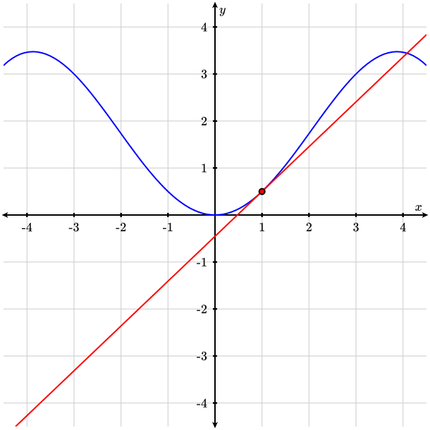
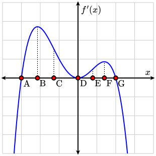

Consider the following graph of \(f(x)=x\sin\left(\dfrac{\pi}{6}x\right)\) and the linear approximation of \(f(x)\) at \(x=1\text{.}\)

A coordinate axis with \(x\)-values ranging from \(-10\) to \(10\) and \(y\)-values ranging from \(-7\) to \(7\) containing a graph of the function \(f(x)=x\sin\left(\dfrac{\pi}{6}x\right)\) and the linear approximation of \(f(x)\) at \(x=1\text{.}\)
A coordinate axis with \(x\)-values ranging from \(-10\) to \(10\) and \(y\)-values ranging from \(-10\) to \(10\) containing a possible graph of the piecewise function described in the above problem.
If we are given an \(x\)-value \(x=a\) and a function \(f(x)\) which is differentiable at \(x=a\text{,}\) the the linearization \(L(x)\) represents the linear approximation of \(f(x)\) close to \(x=a\text{.}\)
Find the critical number(s) and relative/local extrema (maxima and minima) of each of the following functions. Be careful to check whether the derivative changes sign by using a sign chart!
Critical numbers at \(t=0,\dfrac{4}{3},4\text{;}\) Relative minimum at \(\left(\dfrac{4}{3},g\left(\dfrac{4}{3}\right)\right)\text{;}\) Relative maximum at \((4,g(4))\)
Find the absolute extrema (maxima and minima) of each function on the given interval. Be careful to check whether the derivative changes sign at the critical points by using a sign chart, and to check the function values of \(x\)-values at the closed endpoints of the interval by using a T-chart.
What is/are the value(s) of \(c\) that satisfy the conclusion of Rolle’s Theorem for the given functions on the given intervals? If Rolle’s Theorem does not apply, state which condition(s) it fails.
Since \(g(x)\) is not continuous or differentiable at \(x=0\text{,}\)\(g(x)\) is not continuous for all \(x\) in \([-1,1]\text{,}\) nor differentiable for all \(x\) in \((-1,1)\text{,}\) and the Rolle’s Theorem does not apply.
What is/are the value(s) of \(c\) that satisfy the conclusion of the Mean Value Theorem for the given functions on the given intervals? If the Mean Value Theorem does not apply, state which condition(s) it fails.
Since \(h(x)\) is not differentiable at \(x=0\text{,}\)\(h(x)\) is not differentiable for all \(x\) in \((-1,1)\text{,}\) and the Mean Value Theorem does not apply.
Identify the critical points, intervals of increasing/decreasing, and the \(x\)-coordinates of all local extrema for the following functions. Verify that your answers are local extrema using the first or second derivative tests.
Identify the intervals where the following functions are concave up, concave down, and the \(x\)-coordinates of any inflection point(s) for the following functions.
Concave up on \((-\sqrt{3},0)\cup(\sqrt{3},\infty)\text{,}\) Concave down on \((-\infty,-\sqrt{3})\cup(0,\sqrt{3})\text{,}\) Inflection points at \(x=0,\pm\sqrt{3}\)
The radius of a \(3\text{ ft}\) long cylinder was measured to be \(1.2\text{ ft}\) with a maximum error in measurement of \(1\text{ in}\text{.}\) Use differentials to estimate the maximum error in the calculated volume of the cylinder.
What are the value(s) of \(c\) that satisfy the conclusion of the Mean Value Theorem for the function \(f(x)=x^3-4x^2+5x+1\) on the interval \([0,2]\text{?}\)
Use the following graph of \(f'(x)\) to answer questions 8 and 9.

A graph of a polynomial function \(f'(x)\) with seven points marked from left to right. The points are labeled \(\text{A}, \text{B}, \text{C}, \text{D}, \text{E}, \text{F}\text{,}\) and \(\text{G}\text{,}\) respectively, on the \(x\)-axis. Points \(\text{A}\text{,}\)\(\text{D}\text{,}\) and \(\text{G}\) lie on the \(x\)-axis. Points \(\text{B}\) and \(\text{F}\) are at the tops of hills and point \(\text{D}\) is at the bottom of a valley. \(\text{C}\) and \(\text{E}\) are inflection points of \(f'\text{.}\)